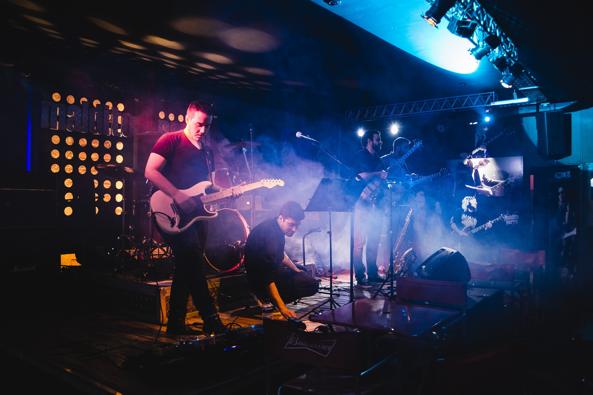
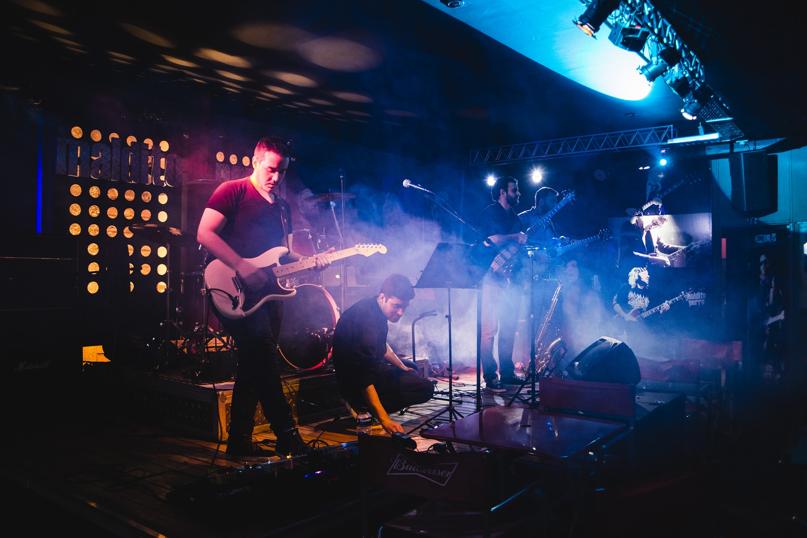

Franco Bonaffini
Profesional dedicado a la contabilidad con un perfil proactivo, creativo, autodidacta y orientado a la calidad. Amante de la tecnología y aficionado al desarrollo de software, la composición musical y las series de ciencia ficción.
Estos últimos años me he dedicado al estudio de la programacion ya que considero es una herramienta y una habilidad necesaria para el futuro de cualquier profesión.
A continuacion dejo el link para descargar mi curriculum personal:
DESCARGAR CURRÍCULUM
Contabilidad
Estudié del año 2012 al 2015 en la Universidad Nacional de Cuyo, luego de 2015 a 2022 finalicé mis estudios en la Universidad de Congreso en la cual me recibí de Contador Publico Nacional
Conocimientos: Área impositiva, Área Previsional, Área Financiera
-Área Impositiva: : Cuento con conocimientos sobre monotributo (altas, bajas, recategorizaciones, modificacion aportes y obra social), Liquidacion de Ingresos Brutos (incluyendo descarga de retenciones y percepciones) , IVA y desenvolvimiento en la web de AFIP
-Área Previsional: SICAM, como tambien trámites en ANSES, tanto jubilaciones, pensiones, Retiros por invalidez, Cambio bocas de pago,
-Área Financiera: Inversiones a Largo plazo, calculo de intereses, Retornos de inversion, Rentabilidad de proyectos,etc
-Criptodivisas: Todo sobre el uso de la Blockchain, comercio p2p, inversiones, web3, economías descentralizadas
-Mineria Cripto: Conocimiento de Hardware y Software para desarrollo de Rig de Mineria (Ethereum, Ethereum Classic, Ravencoin,etc.)


Programacion
En los ultimos años he dedicado mi tiempo al estudio de la programacion, comenzando por lenguajes de Frontend (HTML, CSS, JAVASCRIPT), lenguajes de Backend (Python) como a su vez creacion de base de datos con SQLITE
Como profesional del futuro, hay que pensar en adaptarse al cambio tecnológico, ya que de esta manera evitamos la obsolecencia y facilitamos nuestras tareas mediante la automatizacion de procesos
Actualmente me encuentro en el estudio de inteligencia Artificial mediante la creacion de redes neuronales


Hobbies
A lo largo de mi vida, desde pequeño siempre me llamó la atencion el mundo del arte, y mas especificamente de la Música. Este interés se inculcó al escuchar las primeras notas de los discos de Pink Floyd, Led Zeppelin, The Cure, Génesis, The Beatles.
Esto me llevó a los 9 años a aprender a tocar la guitarra, el cual mi profesor Emir Mazza pudo reafirmar mi pasión por el instrumento
A lo largo de los años pude lograr formar parte de distintas bandas, en las cuales se incluyó, Difusion (2008) - Tributo al rock nacional / Sudamerican-Twitter (2010) - Musica Propia / Dynamo (2012) - Tributo a Soda Stereo / Ecos (2017) - Tributo a Pink Floyd
Actualmente me encuentro produciendo mi musica en los momentos libres, y colaborando con proyectos como musico sesionista
 
